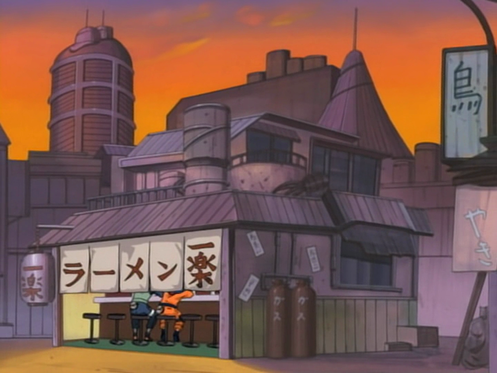

RAMEN ICHIRAKU
Ramen Ichiraku (ラーメン一楽, Râmen Ichiraku, Signifiant littéralement : Râmen est le Meilleur Plaisir) est un restaurant de Konoha appartenant à Teuchi où l'on sert des ramen (ラーメン, ramen) et c'est le lieu favori de Naruto Uzumaki et Iruka Umino pour aller manger.
Le restaurant est géré par Teuchi et sa fille Ayame et tous deux considèrent Naruto comme leur meilleur client. Dans la deuxième partie du manga, Ayame partit en voyage, et Matsu et Nishi furent embauchés pour la remplacer.Tous deux sont assez maladroits, vu que parfois ils renversent des bols de ramen ou y mettent leurs doigts accidentellement. Le restaurant fut détruit pendant l'invasion de Pain, et un nouveau fut construit peu après l'invasion.
On vit dans ce restaurant différentes scènes de la série. Un épisode anime fut dédié à ce restaurant, où y fut enlevé Ayame. Naruto et ses amis durent créer une recette parfaite de ramen en tant que rançon. En utilisant le ninjutsu, Chôji, Sakura et Naruto firent la recette parfaite. À la fin de l'épisode, on rajouta cette recette au menu, ce qui fit venir presque tous les personnages féminins de la série au restaurant. Dans l'anime Naruto Shippûden, Ayame convainquit son père de transformer le restaurant en magasin de Tsukemen, au grand dam de Naruto.
👉🏽 Il a été révélé dans le film Naruto Shippûden Film 4 : The Lost Tower que le restaurant a été construit vingt-trois ans avant le début de la série. Toutefois, selon le Troisième Databook, le restaurant existe depuis environ trente-quatre ans.
👉🏽 Ichiraku Ramen a été inspiré d'un restaurant de ramen réel, lui aussi appelé Ichiraku Ramen, près du bord de mer de la ville de Fukuoka, au Japon, où l'auteur de Naruto, Masashi Kishimoto, a étudié à l'université Kyushu Sangyo Daigaku qui se trouve à Fukukoa, selon des sources locales. Il est à côté d'un restaurant Yakiniku (barbecue japonais) (il est possible que Kishimoto s'en soit inspiré pour créer le restaurant préféré de Chôji), un restaurant chinois et une boutique de jeux vidéo. Le ramen Tonkotsu (des nouilles dans un bouillon de porc) y est servi. Il y a deux restaurants Ichiraku Ramen à Fukuoka, l'un près de la station JR de Kyu-dai Mae, qui très proche de l'université Kyushu Sangyo Daigaku, et un autre dans le centre-ville de Hakata. Pour faire la publicité de Naruto, des mouchoirs arborant des personnages de Naruto dans différents bols de ramen instantané étiquetés Ichiraku Ramen y sont vendus.